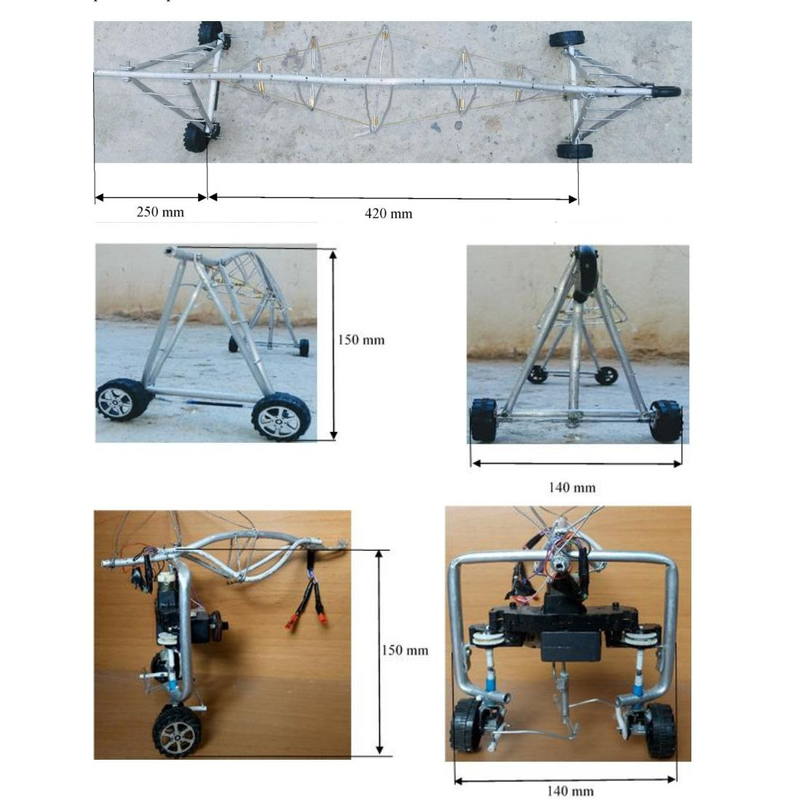
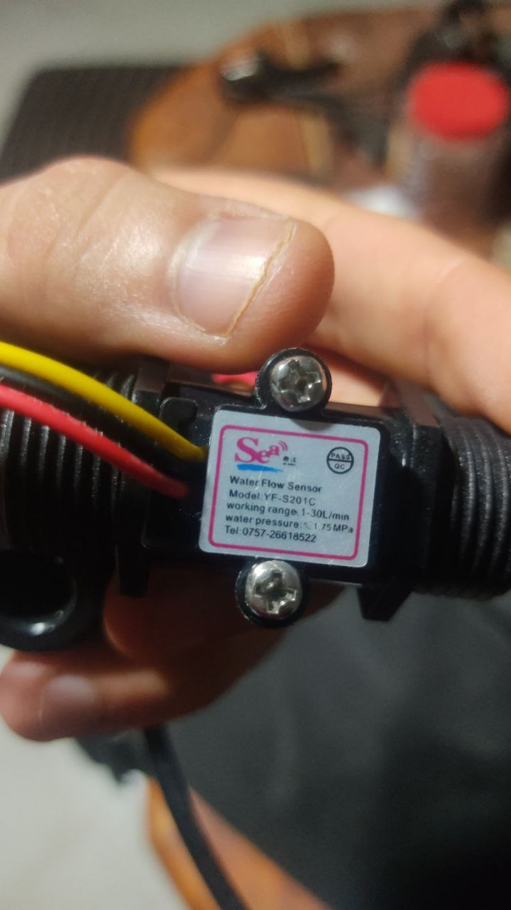
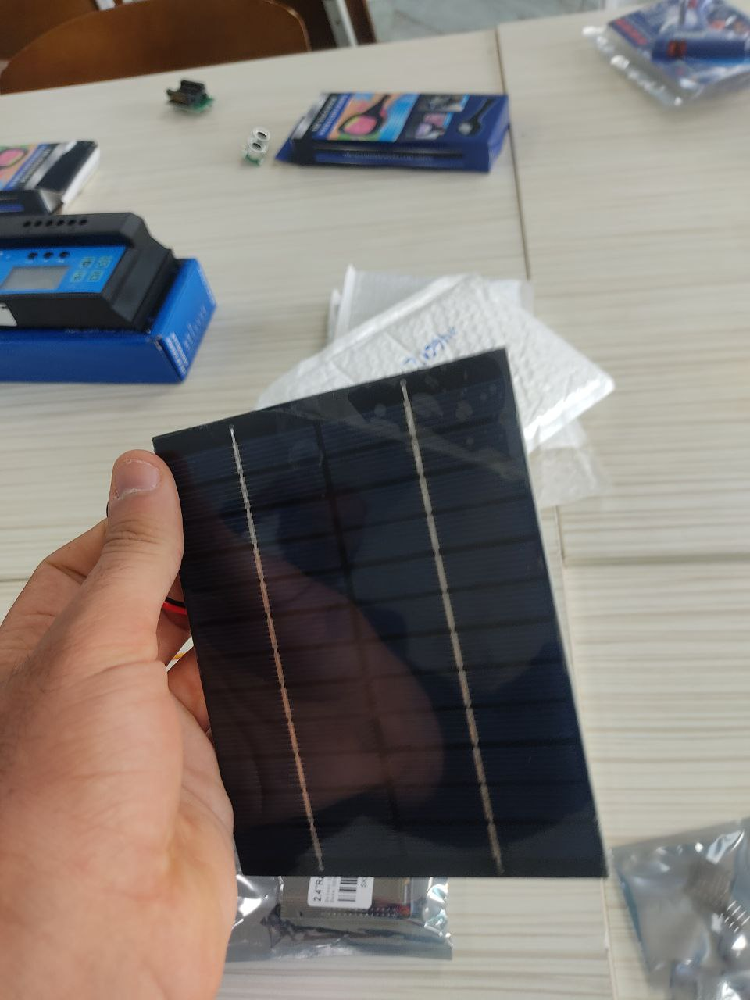
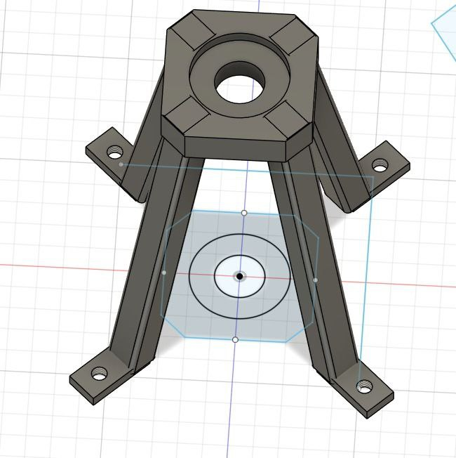
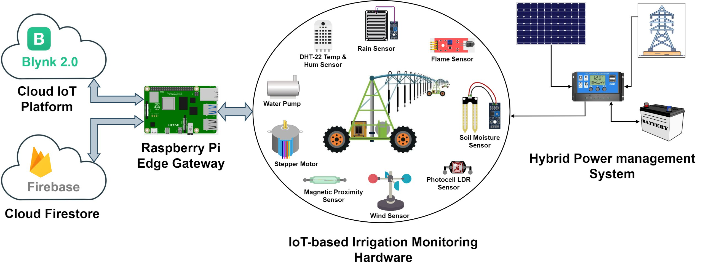

PHYSICAL PROTOTYPE & 3D CAD • النموذج الأولي الفعلي الملموس
تتصفح الآن: النموذج الميكانيكي الفعلي بالألومنيوم و3D CAD — يمكنك التبديل للمحاكي التفاعلي بنقرة واحدة
04
MECHANICAL & IOT VALIDATION • توثيق النموذج الفعلي بالأبعاد الهندسية
النموذج الأولي الفعلي المصنع: هيكل الألومنيوم، الحساسات الحقيقية، وتصميم 3D CAD
يعرض هذا القسم الصور الحقيقية والقياسات الميكانيكية الدقيقة للنموذج الأولي الذي قمنا بتصنيعه واختباره في المخبر لإثبات جدوى الفكرة أمام المستثمرين واللجنة الوطنية:

REALالأبعاد الميكانيكية المعتمدة للنموذج المصنع
هيكل ذراع المحور المعدني وبرج القيادة الكهروميكانيكي
تم بناء هيكل النموذج الأولي من أنابيب الألومنيوم الخفيفة والمقاومة للصدأ مع شدادات توازن هندسية (Truss Geometry) وعجلات قيادة آلية مدفوعة بمحرك كهربائي:
- 📐 طول الذراع الرئيسي الوسطي: 420 mm
- 📐 طول الامتداد الجانبي للبرج: 250 mm (Total: 670 mm)
- 📐 ارتفاع برج الارتكاز الميكانيكي: 150 mm
- 📐 عرض قاعدة العجلات (Wheelbase): 140 mm

حساس تدفق المياه الفعلي (YF-S201C)
نطاق قياس 1–30 لتر/دقيقة وضغط عمل حتى 1.75 MPa لمراقبة الضخ الفعلي.

الخلية الشمسية ومنظم الشحن بالمخبر
اختبار التغذية الشمسية المستقلة لتشغيل الحساسات والمتحكم في البيئة الصحراوية.

النمذجة ثلاثية الأبعاد للقاعدة (3D CAD)
تصميم هندسي ثلاثي الأبعاد لقاعدة الارتكاز رباعية الأرجل وحلقة تمرير المياه.
مخطط البنية المعمارية الشاملة لنظام إنترنت الأشياء والطاقة الهجينة
